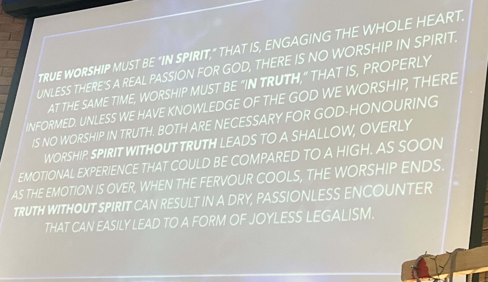

John 4:19-26
When it comes to worship, the concern doesn’t lie within the question of where we worship, rather how we worship.
"Knowledge is of no use if it does not lead to a holy practice. 'The knew God,' it was no good to them to know God, for 'they glorified him not as God.' So, it does not matter what you think or what you think or what you know unless it leads you to worship and glorify God." - Spurgeon
True worshippers seek to please God in their personal worship, rather than personal satisfaction.
If our worship doesn’t have God at the centre, it will never glorify or please Him.
"True worshippers demonstrate adoration for an audience of one, they don’t bow down or lift their hands to be seen by others. They don’t sing to be heard by humans? They don’t fast or pray to earn worldly recognition (Matthew 6:6, 18). True worshippers exalt God alone, for His pleasure only, because He alone is worthy."
(Exodus 34:14; 1 Chronicles 16:25-19)
True worshippers don’t seek a worship experience, but they live a worshipping life.
When we link worship to an experience, such as music, we miss the point of worship. While music is a form of worship, true worship is longing to glorify God at all times and in all aspects of your life, even when it’s difficult.
"Love so amazing, so divine, demands my soul, my life, my all."
True worshippers are what the Father seeks.
God is looking for a consistent and obedient servant who always worships Him.
"The human heart is an idol factory that takes good things like a successful career, love, material possessions, even family, and turns them into ultimate things, our hearts deify them as the centre of our lives, because, we think, they can give us significance and security, safety and fulfilment, if we attain them." - Timothy Keller